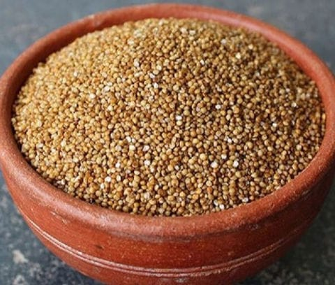

கோயண்டா (சில்லண்ட்ரோ)
அருகிய நோய்கள்:
- தடுக்கப்பட்டல்: மண் உள்ள நோய்களை (உதாரணமாக, பிதியம், ரிசோக்டோனியா).
- பவுடரீ மில்டியூ: ஈரிஸிபே போலிகோனி என்ற பூஞ்சை காரணமாக.
- அப்பிட்ஸ் மற்றும் இலையுப்புடைகள்: அப்பிட்ஸ் மஞ்சள் மற்றும் மந்தமான வளர்ச்சியை ஏற்படுத்தலாம்.
இயற்கை தீர்வுகள்:
- தடுக்கப்பட்டலுக்கான: நன்கு வடிகட்டப்பட்ட மண்ணை உறுதி செய்யவும், அதிக நீர்வரத்தைத் தவிர்க்கவும். பூஞ்சை வளர்ச்சியை அடக்க ஜெடிக்கல் அல்லது நிம்மெல் எண்ணெய் பூசவும்.
- பவுடரீ மில்டியூ: சல்பர் அடிப்படையிலான பூஞ்சை மருந்துகளைப் பயன்படுத்தவும் அல்லது வீட்டில் செய்யக்கூடிய ஸ்ப்ரேகளைப் பயன்படுத்தவும். நல்ல காற்றோட்டத்தை உறுதி செய்யவும் மற்றும் மேல்பரிசுகள் நீர்த்துப்பிக்கவும்.
- அப்பிட்ஸ்: நிம்மெல் எண்ணெய், பூச்சிக்கொல்லி சோப் அல்லது லேடி பாக்களை நலமான பூச்சிகள் நுழைக்கவும்.
வெங்காயம் (எக்க்பிளாண்ட்)

அருகிய நோய்கள்:
- பழம் மற்றும் எஸ்ட்டு போர்: பழம் மற்றும் எஸ்ட்டுகளை சேதமாக்கும் பொதுவான பூச்சி.
- பாக்டீரியல் வில்ல்ட்: ரால்ஸ்டோனியா சோலனாசேரம் காரணமாக.
- போமோப்சிஸ் பிளைட்: பழங்களை சுரண்டும் பூஞ்சை நோய்.
இயற்கை தீர்வுகள்:
- பழம் மற்றும் எஸ்ட்டு போருக்கான: பாதிக்கப்பட்ட பகுதிகளை கைபற்றி அழிக்கவும். நிம்மெல் எண்ணெய் ஒவ்வொரு நாளும் சிதரிக்கவும். இயற்கை விருப்பங்களை அறிமுகம் செய்யவும்.
- பாக்டீரியல் வில்ல்ட்: நோய் எதிர்ப்பு வகைகளைப் பயன்படுத்தவும் மற்றும் பயிர்களை சுழற்றவும். மண்ணை சோலரייז் செய்யவும்.
- போமோப்சிஸ் பிளைட்: பாதிக்கப்பட்ட பழங்கள் மற்றும் செடிகளை நீக்கவும். நகல் அடிப்படையிலான பூஞ்சை மருந்துகளைப் பயன்படுத்தவும்.
ஆந்தை மூடி (ஒக்ரா)

அருகிய நோய்கள்:
- மஞ்சள் நரம்பு மசோசிக் வைரஸ் (YVMV): வெள்ளை பறவைகள் மூலம் பரவுகிறது.
- பவுடரீ மில்டியூ: ஈரிஸிபே சிசோராசேரியும்.
- மூல்நோட்டு நிமாட்டோடுகள்: இவை 根ங்களை தாக்குகின்றன, வளர்ச்சியை மந்தமாக்குகிறது.
இயற்கை தீர்வுகள்:
- மஞ்சள் நரம்பு மசோசிக் வைரஸ்: வெள்ளை பறவைகளின் எண்ணெய் அல்லது பூச்சிக்கொல்லி சோப்புடன் கட்டுப்படுத்தவும். நோய் எதிர்ப்பு வகைகளைப் பயன்படுத்தவும்.
- பவுடரீ மில்டியூ: பிகிங்க் சோடா மற்றும் நீர் கலவை மூலம் ஸ்பிரே செய்யவும். சல்பர் அடிப்படையிலான இயற்கை பூஞ்சை மருந்துகளைப் பயன்படுத்தவும்.
- மூல்நோட்டு நிமாட்டோடுகள்: பயிர்களை பிணையத் தன்மையிலா உள்ள செடிகளுக்குள் சுழற்றவும். மண்ணில் நிம்மெல் கேக் பயன்படுத்தவும்.
அரிசி

அருகிய நோய்கள்:
- பிளாஸ்ட் நோய்: மெக்னாபோர்தி ஓரிசே காரணமாக.
- பாக்டீரியல் இலைப் பிளைட் (BLB): க்சாந்தோமோனாஸ் ஓரிசே காரணமாக.
- தனியத் தட்டுதல்: பிபோலாரிஸ் ஓரிசே காரணமாக.
இயற்கை தீர்வுகள்:
- பிளாஸ்ட் நோய்க்கு: பூஞ்சை மருந்துகள், முக்கியமாக குறைந்த மழை சீராக்கங்களுடன்.
- பாக்டீரியல் இலைப் பிளைட்டுக்கு: நன்கு வடிகட்டப்பட்ட மண் மற்றும் பயிர்கள் மூலம் பராமரிக்கவும்.
- தனியத் தட்டுதலுக்கு: நீர் குழாய்களைத் தூய்மை செய்யவும் மற்றும் நீர்வரத்தைப் கட்டுப்படுத்தவும்.
மக்காச்சோளம்
அருகிய நோய்கள்:
- சுமட் நோய்: உடைந்த பிணைப்புக்கள் மற்றும் வளர்ச்சி சீர்மட்டல்களை ஏற்படுத்துகிறது.
- மாக்னோடியஸிஸ்: ஒரு பூஞ்சை நோய்.
- உயர்ந்த நோய்: மொட்டுப்பட்ட மெளர்கோட்டல் மற்றும் இலையுப் புழுக்கள் மூலம்.
இயற்கை தீர்வுகள்:
- சுமட் நோய்க்கு: பாதிக்கப்பட்ட பகுதிகளை கைபற்றிக் கிளை நோய்களைத் தவிர்க்கவும்.
- மாக்னோடியஸிஸ்: சல்பர் அடிப்படையிலான பூஞ்சை மருந்துகளைப் பயன்படுத்தவும்.
- உயர்ந்த நோய்க்கு: பயிர்கள் மாற்றங்களைத் தடுக்கவும் மற்றும் நெறியாளர்கள் பரிசோதனை செய்யவும்.
ஆலு (பொட்டேட்டோ)

அருகிய நோய்கள்:
- முதற்கட்ட மில்டியூ: பிளாஸ்டோபோறா இன்ஃபெஸ்டன்ஸ் காரணமாக.
- பயரியியல் நோய்: வெட்கம் மற்றும் மேல் வார்த்தைகளை உருவாக்கும்.
- மண்ணியல் மில்டியூ: ஈரமான நிலைமைதான் மிகக்கூடியது.
இயற்கை தீர்வுகள்:
- முதற்கட்ட மில்டியூ: பீட்டரிக்ஸ்ஸியோடு வேளாண்மையை சிக்கலான விஷயங்களை அழிக்கவும்.
- பயரியியல் நோய்க்கு: புதுமையான மற்றும் நோய் எதிர்ப்பு பயிர்களைப் பயன்படுத்தவும்.
- மண்ணியல் மில்டியூ: மண்ணை அதிகப்படியான ஈரத்திலிருந்து விடுவிக்கவும்.
தக்காளி

அருகிய நோய்கள்:
- பிளாஸ்ட்டு: மொட்டுப் பாக்டீரியா மூலம்.
- மூலத்திலுள்ள தட்டுதல்: பொட்டரீ பிளாஸ்டோஃபோறா மூலம்.
- பட்டுப்படும்: அம்பெராபா பர்மீன் மூலம்.
இயற்கை தீர்வுகள்:
- பிளாஸ்ட்டுக்கான: புளியும்குமரி ஊதுவம் செய்யவும்.
- மூலத்திலுள்ள தட்டுதலுக்கு: மேல் நோய்கள் அறிந்து துவக்கம் செய்யவும்.
- பட்டுப்படும்: வேளாண்மை மாற்றங்களை மேற்கொள்க.
பூசணி

அருகிய நோய்கள்:
- பவுடரீ மில்டியூ: ஈரீஸிபே புகடின்.
- மடல் பிளையிட்: பூஞ்சை நோய்.
- வெள்ளை பூச்சியால் பாதிப்பு: ஒவ்வொரு பயிர்களும் பாதிக்கப்படுகின்றன.
இயற்கை தீர்வுகள்:
- பவுடரீ மில்டியூ: ருசிகரமான மூலிகைகளைப் பயன்படுத்தவும்.
- மடல் பிளையிடுக்கு: சல்பர் அடிப்படையிலான இயற்கை பூஞ்சை மருந்துகளைப் பயன்படுத்தவும்.
- வெள்ளை பூச்சி: இழந்த வெள்ளை பூச்சிகளை நீக்கவும்.
சீக்குமா
அருகிய நோய்கள்:
- தடித்தல் மில்டியூ: பூஞ்சை நோய்.
- வெள்ளை பிளியோட்: பூஞ்சை நோய்.
- வந்தன உருக்கும்: மகிழ்ச்சியான பாதிப்பு.
இயற்கை தீர்வுகள்:
- தடித்தல் மில்டியூ: கண் தொலைபேசி மற்றும் பரிசுத்தி செய்யவும்.
- வெள்ளை பிளியோட்: சல்பர் அடிப்படையிலான பூஞ்சை மருந்துகளைப் பயன்படுத்தவும்.
- வந்தன உருக்கும்: பயிர்களை மாற்றவும் மற்றும் அறியவும்.
அரிசி (கிரவுள்)
அருகிய நோய்கள்:
- அஃப்லடாக்சினோசிஸ்: மெல்லிசெய்யப்படாத பூஞ்சை பரவலாக உள்ளது.
- பூச்சி: பயிர்களுக்கு இடையூறாக உள்ளது.
- வயிற்றுப்பிறப்புகள்: பாக்டீரியல் நோய்.
இயற்கை தீர்வுகள்:
- அஃப்லடாக்சினோசிஸ்: சல்பர் அடிப்படையிலான பூஞ்சை மருந்துகளைப் பயன்படுத்தவும்.
- பூச்சி: நீர் வளையங்களைத் தவிர்க்கவும் மற்றும் பயிர்களை பரிசுத்திக்கவும்.
- வயிற்றுப்பிறப்புகள்: விவசாய முறைகளை ஒழுங்குபடுத்தவும்.
தேரகு (கொட்டன்)
அருகிய நோய்கள்:
- பால் பிளாட்டர்ஸ்: பூஞ்சை நோய்.
- பெரிய புழுக்கள்: பூச்சிகள் மற்றும் நோய்கள்.
- மடல் சுழற்சி: வெள்ளை நுரை மூலம் ஏற்படும்.
இயற்கை தீர்வுகள்:
- பால் பிளாட்டர்ஸ்: கூடிய முயற்சிகளை எடுத்துக் கொள்ளவும்.
- பெரிய புழுக்கள்: பயிர்களை பரிசுத்திக்கவும் மற்றும் படுக்கையைக் கட்டுப்படுத்தவும்.
- மடல் சுழற்சி: களஞ்சியங்களைப் பரிசுத்திக்கவும்.
சர்க்கரை பிளவுண்டு (சர்க்கரை மிளகு)

அருகிய நோய்கள்:
- ஸ்டிரிகா: மண்ணின் நோய்.
- பரம்பரையியல் நோய்: மடல் கட்டுப்பாட்டு பயிர்களில்.
- மண்ணியல் புழுக்கள்: மண்ணின் நோய்.
இயற்கை தீர்வுகள்:
- ஸ்டிரிகா: நெகடிவ் பயிர்களைத் தவிர்க்கவும்.
- பரம்பரையியல் நோய்க்கு: மருந்துகளைப் பயன்படுத்தவும்.
- மண்ணியல் புழுக்களுக்கு: மண்ணை பரிசுத்திக்கவும்.
பஞ்ச மிளகு

அருகிய நோய்கள்:
- தடுமாறுபாடு: பூஞ்சை நோய்.
- தோல் நோய்: இலை மற்றும் கொட்டையிலிருந்து வரும்.
- பூச்சிகள்: நோய்கள் மற்றும் இலைப் புழுக்கள்.
இயற்கை தீர்வுகள்:
- தடுமாறுபாடு: சல்பர் அடிப்படையிலான பூஞ்சை மருந்துகளைப் பயன்படுத்தவும்.
- தோல் நோய்க்கு: புதிய பயிர்களைப் பயன்படுத்தவும்.
- பூச்சிகளுக்கு: பயிர்களைப் பரிசுத்திக்கவும்.
நல்லொழிக்கருவி (பிளாக் கிராம்)

அருகிய நோய்கள்:
- காட்டுக் காயங்கள்: பூஞ்சை நோய்.
- நாளிரவு: புவியியல் நோய்கள்.
- மன்னிப்பு: ஒரு வகை பின்வட்டப் பயிர்கள்.
இயற்கை தீர்வுகள்:
- காட்டுக் காயங்களுக்கு: புல் அடிப்படையிலான பூஞ்சை மருந்துகளைப் பயன்படுத்தவும்.
- நாளிரவிற்கு: பயிர்களின் நிலைமைகளை மேம்படுத்தவும்.
- மன்னிப்பு: பின் நிலைகளை பரிசுத்திக்கவும்.